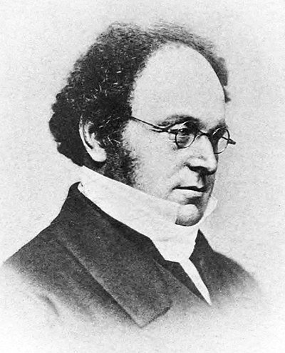

這份筆記是關於自然數、整數與有理數的建構與性質。
聯集與交集
定義 1：集族 (Family of Sets)
給定集合\(I\neq\varnothing\)，若所有\(\alpha\in I\)都能對應至一集合\(A_\alpha\)，則稱\(\{A_\alpha\}_{\alpha\in I}\)為一集族。
定義 1-1：指標集 (Index Set)
定義1中的\(I\)稱為集族\(\{A_\alpha\}_{\alpha\in I}\)的指標集。
定義 2：聯集 (Union)
給定集族\(\{A_\alpha\}_{\alpha\in I}\)，我們定義其聯集為 \[ \bigcup_{\alpha\in I}A_\alpha=\{x:x\in A_\alpha\mbox{ for some }\alpha\in I\} \]
定義 3：交集 (Intersection)
給定集族\(\{A_\alpha\}_{\alpha\in I}\)，我們定義其交集為 \[ \bigcap_{\alpha\in I}A_\alpha=\{x:x\in A_\alpha,\;\forall\alpha\in I\} \]
定理 4：集合分配律 (Distributive Properties of Sets)
給定集族\(\{A_\alpha\}_{\alpha\in I}\)與集合\(B\)，我們有 \[ \begin{aligned} B\cap\left(\bigcup_{\alpha\in I}A_\alpha\right)&=\bigcup_{\alpha\in I}(B\cap A_\alpha)\\ B\cup\left(\bigcap_{\alpha\in I}A_\alpha\right)&=\bigcap_{\alpha\in I}(B\cup A_\alpha) \end{aligned} \] 這些都可以直接從定義得出，詳略。
定理 5：笛摩根律 (De Morgan's Law)
給定集族\(\{A_\alpha\}_{\alpha\in I}\)與集合\(B\)，我們有 \[ \begin{aligned} B-\left(\bigcap_{\alpha\in I}A_\alpha\right)&=\bigcup_{\alpha\in I}(B-A_\alpha)\\ B-\left(\bigcup_{\alpha\in I}A_\alpha\right)&=\bigcap_{\alpha\in I}(B-A_\alpha) \end{aligned} \] 這些都可以直接從定義得出，詳略。
自然數
公理 6：皮亞諾公理 (Axioms of Peano)
我們將滿足下列五項公理的集合\(\mathbb{N}\)稱為自然數 (Natural Numbers)：
1. \(1\in\mathbb{N}\) (意即\(\mathbb{N}\)是非空的。)
2.
對於所有\(k\in\mathbb{N}\)，都存在恰一個\(k\)的後繼元素(successor)\(s(k)\in\mathbb{N}\)。
3. 若集合\(B\subseteq\mathbb{N}\)滿足
(1) \(1\in B\)
(2) 若\(k\in B\)則\(s(k)\in B\)
則\(B=\mathbb{N}\)(此即數學歸納法)。
4.
\(1\)不是\(\mathbb{N}\)中任何元素的後繼元素。
5.
若\(\mathbb{N}\)中\(m\neq n\)，則\(S(m)\neq S(n)\)。

定義 6-1：自然數的排序 (Ordering of Natural Numbers)
我們如下定義\(\mathbb{N}\)中元素的大小排序：
1.
定義\(1\)是\(\mathbb{N}\)中最小的元素。
2. 對於\(k\in\mathbb{N}\)，定義\(k<s(k)\)。
於是即有\(1<s(1)<s(s(1))<s(s(s(1)))\cdots\)。
定義 6-2：自然數的加法 (Addition of Natural Numbers)
我們如下定義\(\mathbb{N}\)中元素的加法：
1. 對於\(n\in\mathbb{N}\)，定義\(n+1=s(n)\)。
2. 對於\(n,m\in\mathbb{N}\)，定義\(n+(m+1)=(n+m)+1=s(n+m)\)。
此即用數學歸納法定義加法。
定義 7：半群 (Semigroup)
給定集合\(A\)與其上的運算\(\bigstar\)，若對於所有\(m,n,p\in A\)滿足
1. \(m\bigstar n\in A\) (運算封閉性)
2.
\((m\bigstar n)\bigstar p=m\bigstar(n\bigstar
p)\) (結合律)
則稱\((A,\bigstar)\)為半群。
定義 7-1：交換半群 (Commutative Semigroup)
給定半群\((A,\bigstar)\)，若對所有\(m,n\in A\)有\(m\bigstar n=n\bigstar m\)，則稱\((A,\bigstar)\)為交換半群。
定理 8
自然數\((\mathbb{N},+)\)是交換半群。
證明：我們分底下三個部分檢查\((\mathbb{N},+)\)是否滿足交換半群的條件：
1. 封閉性：這是顯然的。對於\(m,n\in\mathbb{N}\)，顯然會有\(m+n\in\mathbb{N}\)。
2.
結合律：我們希望說明對於任意\(m,n,k\in\mathbb{N}\)都有 \[
(n+m)+k=n+(m+k)
\] 我們對\(k\)用數學歸納法。
(1) 當\(k=1\)時，由加法的定義(定義6-2)可知\((n+m)+1=n+(m+1)\)，即結合律成立。
(2)
假設\(k=p\geq 1\)時，\((n+m)+p=n+(m+p)\)，則令\(n+m=\tilde{n}\), \(p=\tilde{m}\)。則 \[
\begin{aligned}
(n+m)+(p+1)&=\tilde{n}+(\tilde{m}+1)\\
&=(\tilde{n}+\tilde{m})+1\\
&=((n+m)+p)+1\\
&=(n+(m+p))+1\mbox{ (歸納假設)}\\
&=n+((m+p)+1)\\
&=n+(m+(p+1))
\end{aligned}
\] 即結合律對\(k=p+1\)也成立，故由數學歸納法可知結合律對任意\(k\in\mathbb{N}\)都成立。
3.
交換律：我們希望說明對於所有\(m,n\in\mathbb{N}\)有\(m+n=n+m\)。我們對\(n\)使用數學歸納法。
(1) 當\(n=1\)時，由定義有 \[
1+m=\underbrace{s(s(s(\cdots(s}_{m\mbox{個}}(1))\cdots)=s(m)=m+1
\] (2) 假設當\(n=p\geq
1\)時有\(m+p=p+m\)，則由結合律有
\[
\begin{aligned}
p+(n+1)&=(p+n)+1\\
&=(n+p)+1\mbox{ (歸納假設)}\\
&=n+(p+1)\\
&=n+(1+p)\\
&=(n+1)+p
\end{aligned}
\] 即\(n=p+1\)時交換律成立，故由數學歸納法可知交換律對任意\(n\in\mathbb{N}\)都成立。
由以上三點，可知\((\mathbb{N},+)\)是交換半群。QED
定義 9：自然數的乘法 (Multiplication of Natural Numbers)
我們如下定義\(\mathbb{N}\)中元素的乘法：
1. 對於\(n\in\mathbb{N}\)，定義\(n\times 1=n\)。
2. 對於\(n,m\in\mathbb{N}\)，定義\(n\times(m+1)=n\times m+n\)。
和定義6-2中一樣，這裡是用數學歸納法定義乘法。
性質 9-1：右分配律 (Right-Distributive Property)
對於所有\(m,n,k\in\mathbb{N}\)，有\(m(n+k)=mn+mk\)。
證明：我們對\(k\)使用數學歸納法。
1. \(k=1\)時，由定義有 \[
m(n+1)=mn+m\cdot 1=mn+n
\] 即\(k=1\)時右分配律成立。
2. 假設當\(k=p\)時右分配律成立，則對於\(k=p+1\)，有 \[
\begin{aligned}
m(n+(p+1))&=m((n+p)+1)\\
&=m(n+p)+m\\
&=(mn+mp)+m\mbox{ (歸納假設)}\\
&=mn+(mp+m)\\
&=mn+m(p+1)
\end{aligned}
\] 即\(k=p+1\)時右分配律亦成立，故由數學歸納法知右分配律對所有\(k\in\mathbb{N}\)成立。QED
性質 9-2：左分配律 (Left-Distributive Property)
對於所有\(m,n,k\in\mathbb{N}\)，有\((m+n)k=mk+nk\)。
證明：我們對\(k\)使用數學歸納法。
1. \(k=1\)時，由定義有 \[
(m+n)\cdot 1=m+n=m\cdot 1+n\cdot 1
\] 即\(k=1\)時左分配律成立。
2. 假設當\(k=p\)時左分配律成立，則對於\(k=p+1\)，有 \[
\begin{aligned}
(m+n)(p+1)&=(m+n)p+(m+n)\cdot 1\\
&=mp+np+m+n\mbox{ (歸納假設)}\\
&=(mp+m)+(np+n)\\
&=m(p+1)+n(p+1)
\end{aligned}
\] 即\(k=p+1\)時左分配律亦成立，故由數學歸納法知左分配律對所有\(k\in\mathbb{N}\)成立。QED
性質 9-3：結合律 (Associative Property)
對於所有\(m,n,k\in\mathbb{N}\)，有\((mn)k=m(nk)\)。
證明：我們對\(k\)使用數學歸納法。
1. \(k=1\)時，由定義有 \[
m(n\cdot 1)=mn=mn\cdot 1
\] 即\(k=1\)時結合律成立。
2. 假設當\(k=p\)時結合律成立，則對於\(k=p+1\)，有 \[
\begin{aligned}
(mn)(p+1)&=(mn)p+mn\\
&=m(np)+mn\mbox{ (歸納假設)}\\
&=m(np+n)\mbox{ (右分配律)}\\
&=m(n(p+1))
\end{aligned}
\] 即\(k=p+1\)時結合律亦成立，故由數學歸納法知結合律對所有\(k\in\mathbb{N}\)成立。QED
性質 9-4：交換律 (Commutative Property)
對於所有\(m,n\in\mathbb{N}\)，有\(mn=nm\)。
證明：我們想要對\(n\)使用數學歸納法，但必須注意到我們在\(n=1\)時並沒有\(1\cdot m=m\cdot 1\)，故我們要先對\(m\)做數學歸納法來證明\(n=1\)的狀況。
1. \(m=1\)時，有\(1\cdot 1=1\cdot 1=1\)。
2. 假設當\(m=k\)時有\(k\cdot
1=1\cdot k\) (★)，則對於\(m=k+1\)有 \[
\begin{aligned}
1\cdot(k+1)&=1\cdot k+1\cdot 1\\
&=k\cdot 1+1\cdot 1\mbox{ (歸納假設(★))}\\
&=(k+1)\cdot 1\mbox{ (左分配律)}
\end{aligned}
\] 即\(m=k+1\)時也有\(1\cdot m=m\cdot
1\)，故由數學歸納法可知這對任意\(m\in\mathbb{N}\)都成立。
接著，我們就可以回到原本的命題對\(n\)做數學歸納法了。
1. \(n=1\)時，由上述知有\(m\cdot 1=1\cdot m\)。
2. 假設當\(n=k\)時交換律成立 (☆)，則對於\(n=k+1\)有 \[
\begin{aligned}
m(k+1)&=mk+m\cdot 1\\
&=km+1\cdot m\mbox{ (歸納假設(☆))}\\
&=(k+1)m
\end{aligned}
\] 即\(m=k+1\)時交換律亦成立，故由數學歸納法知交換律對所有\(n\in\mathbb{N}\)成立。QED
整數
定義 10：等價關係 (Equivalent Relation)
考慮一集合\(A\)中的關係\(\sim\)，若\(\sim\)滿足以下三個條件，則稱\(\sim\)為等價關係：
1. 反射性
(Reflexive)：對於所有\(x\in
A\)，有\(x\sim x\)。
2.
對稱性 (Symmetric)：對於所有\(x,y\in
A\)，若\(x\sim y\)，則\(y\sim x\)。
3. 遞移性
(Transitive)：對於所有\(x,y,z\in
A\)，若\(x\sim y\)且\(y\sim z\)，則\(x\sim z\)。
定義 11：等價類 (Equivalent Class)
給定集合\(A\)與其上的等價關係\(\sim\)，考慮\(a\in A\)，我們稱 \[ [a]=\{x\in A:x\sim a\} \] 為一個等價類。
定理 12
給定集合\(A\)與其上的等價關係\(\sim\)，則對於所有\(a,b\in A\)，要不是\([a]=[b]\)就是\([a]\cap[b]=\varnothing\)。
證明：若\([a]\cap[b]\neq\varnothing\)，則應存在\(c\in[a]\cap[b]\)。由定義知對於所有\(\overline{a}\in[a]\)，有\(\overline{a}\sim c\)，同理對於所有\(\overline{b}\in[b]\)有\(\overline{b}\sim c\)。故有 \[ \overline{a}\sim c\sim\overline{b} \] 即\(\overline{a}\sim\overline{b}\), \(\forall\overline{a}\in[a], \overline{b}\in[b]\)。故由等價類的定義知\([a]=[b]\)。QED
定義 13：整數 (Integers)
考慮 \[ \mathbb{N}\times\mathbb{N}=\{(m,n):m,n\in\mathbb{N}\} \] 在其上定義 \[ (m_1,n_1)\sim(m_2,n_2)\Leftrightarrow m_1+n_2=m_2+n_1 \] 可以很容易驗證\(\sim\)是\(\mathbb{N}\times\mathbb{N}\)上的等價關係。我們將整數\(\mathbb{Z}\)定義為所有\(\mathbb{N}\times\mathbb{N}\)關於\(\sim\)的等價類的集合(這件事可以記做\(\mathbb{N}\times\mathbb{N}/\sim\))。
定義 13-1：整數的加法 (Addition of Integers)
我們可以將\(\mathbb{N}\times\mathbb{N}\)上的加法定義為 \[ (m_1,n_1)+(m_2,n_2)=(m_1+m_2,n_1+n_2) \] 以此為基礎我們可以將\(\mathbb{Z}\)上的加法定義為 \[ [(m_1,n_1)]+[(m_2,n_2)]=[(m_1+m_2,n_1+n_2)] \]
註記 13-1-1
這樣的加法是定義良好的，亦即若給定\((a,b),(a',b')\in[(m_1,n_1)]\)，\((c,d),(c',d')\in[(m_2,n_2)]\)，則 \[ [(a,b)]+[(c,d)]=[(a',b')]+[(c',d')] \]
證明：由定義有 \[
\begin{aligned}
\left[(a,b)\right]+[(c,d)]&=[(a+c,b+d)]\\
[(a',b')]+[(c',d')]&=[(a'+c',b'+d')]
\end{aligned}
\] 我們希望說明\([(a+c,b+d)]=[(a'+c',b'+d')]\)，而這等價於證明\((a+c,b+d)\sim(a'+c',b'+d')\)。
由於\((a,b)\sim(a',b')\)，我們有\(a+b'=b+a'\)，同理有\(c+d'=d+c'\)。兩式結合即有 \[
(a+c)+(b'+d')=(a'+c')+(b+d)
\] 即\((a+c,b+d)\sim(a'+c',b'+d')\)。QED
定義 14：交換群 (Commutative Group)
給定交換半群\((A,\bigstar)\)，若
1. 單位元素 (Unit Element)：存在\(e\in
A\)使得對於所有\(x\in A\)有\(e\bigstar x=x\bigstar e=x\)。
2. 反元素
(Inverse Element)：對於所有\(x\in
A\)，存在\(y\in A\)使得\(x\bigstar y=y\bigstar x=e\)。
則稱\((A,\bigstar)\)為交換群。
定理 15
整數\((\mathbb{Z},+)\)是交換群。
證明：我們分底下五個部分檢查\((\mathbb{Z},+)\)是否滿足交換群的條件：
1. 封閉性：這是顯然的。對於\([(m,n)],[(m',n')]\in\mathbb{Z}\)，顯然會有\([(m,n)]+[(m',n')]\in\mathbb{Z}\)。
2. 結合律：給定\([(m_1,n_1)],[(m_2,n_2)],[(m_3,n_3)]\in\mathbb{Z}\)，我們有
\[
\begin{aligned}
([(m_1,n,_1)]+[(m_2,n_2)])+[(m_3,n_3)]&=[(m_1+m_2,n_1+n_2)]+[(m_3,n_3)]\\
&=[((m_1+m_2)+m_3,(n_1+n_2)+n_3)]\\
&=[(m_1+(m_2+m_3),n_1+(n_2+n_3))]\\
&=[(m_1,n_1)]+([(m_2,n_2)]+[(m_3,n_3)])
\end{aligned}
\] 3. 交換律：給定\([(m_1,n_1)],[(m_2,n_2)]\in\mathbb{Z}\)，我們有
\[
\begin{aligned}
\left[(m_1,n_1)\right]+[(m_2,n_2)]&=[(m_1+m_2,n_1+n_2)]\\
&=[(m_2+m_1,n_2+n_1)]\\
&=[(m_2,n_2)]+[(m_1,n_1)]
\end{aligned}
\] 4. 單位元素：對於\(k\in\mathbb{N}\)，令\(e=[(k,k)]\in\mathbb{Z}\)。則對於所有\([(m,n)]\in\mathbb{Z}\)，有 \[
[(m,n)]+e=[(m+k,n+k)]=[(m,n)]
\] 同理有\(e+[(m,n)]=[(m,n)]\)，即\(e\)是\((\mathbb{Z},+)\)中的單位元素。
5.
反元素：對於\(a=[(m,n)]\in\mathbb{Z}\)，考慮\(b=[(n,m)]\in\mathbb{Z}\)，則有 \[
\begin{aligned}
a+b&=[(m+n,n+m)]=e\\
b+a&=[(n+m,m+n)]=e
\end{aligned}
\] 即\(b\)和\(a\)互為反元素。
由以上五點，可知\((\mathbb{Z},+)\)是交換群。QED
定義 16：整數的乘法 (Multiplication of Integers)
我們可以將\(\mathbb{N}\times\mathbb{N}\)上的乘法定義為 \[ (m_1,n_1)\times(m_2,n_2)=(m_1m_2+n_1n_2,m_1n_2+n_1m_2) \] 以此為基礎我們可以將\(\mathbb{Z}\)上的加法定義為 \[ [(m_1,n_1)]\times[(m_2,n_2)]=[(m_1m_2+n_1n_2,m_1n_2+n_1m_2)] \]
註記 16-1
給定\(k\in\mathbb{N}\)，可以很容易驗證\(\mathbb{Z}\)上的乘法單位元素為\(i=[(k,k+1)]\)，即對於所有\([(m,n)]\in\mathbb{Z}\)有 \[ [(m,n)]\times i=i\times[(m,n)]=[(m,n)] \]
定義 17：整數的排序 (Ordering of Integers)
給定\([(m_1,n_1)],[(m_2,n_2)]\in\mathbb{Z}\)，若\(m_1+n_2>m_2+n_1\)，則稱\([(m_1,n_1)]>[(m_2,n_2)]\)。
定義 17-1：負整數 (Negative Integers)
若\([(m,n)]\in\mathbb{Z}\)小於\(\mathbb{Z}\)中的加法單位元素\(e=[(k,k)]\)，則稱\([(m,n)]\)是負整數。
定義 17-1-1：相反數 (Opposite Numbers)
對於\([(m,n)]\in\mathbb{Z}\)，我們通常記\(-[(m,n)]=[(n,m)]\)。
引理 18
給定\(a\in\mathbb{Z}\)，若\(a>e=[(k,k)]\)，則\(a\geq i=[(k,k+1)]\)(即\(e=[(k,k)]\)和\(i=[(k,k+1)]\)之間沒有整數)。
證明：給定\(a=[(m,n)]>e=[(k,k)]\)，則由定義有\(m+k>n+k\)。由自然數的排序性質可知 \[ m+k\geq n+k+1 \] (\(m+k\)要大於\(n+k\)代表它至少要是\(n+k\)的後繼數)。故 \[ [(m+n)]\geq[(k,k+1)]=i \] 即\(a\geq i\)。QED
註記 18-1
用類似引理18的手段，我們可以排出一串整數 \[ \cdots<[(k,k+2)]<-i=[(k,k+1)]<e=[(k,k)]<i=[(k+1,k)]<[(k+2,k)]\cdots \] 它們兩兩之間都沒有其他整數。
定義 19：自然數嵌入整數 (Embedding of Natural Numbers into Integers)
對於\(n\in\mathbb{N}\)，考慮映射\(\phi:\mathbb{N}\to\mathbb{Z}\)，其中 \[
\phi(n)=[(n+k,k)]
\] 其中\(k\)是任意的自然數(從定義可以很容易知道選擇任何自然數\(k\)都會映射到同一個等價類)。
性質 19-1
對於\(n_1,n_2\in\mathbb{N}\)，有\(\phi(n_1)+\phi(n_2)=\phi(n_1+n_2)\)。
證明：由定義有 \[ \begin{aligned} \phi(n_1)+\phi(n_2)&=[(n_1+k,k)]+[(n_2+q,q)]\\ &=[(n_1+n_2+k+q,k+q)]\\ &=\phi(n_1+n_2) \end{aligned} \] QED
性質 19-2
對於\(n_1,n_2\in\mathbb{N}\)，有\(\phi(n_1)\phi(n_2)=\phi(n_1n_2)\)。
證明：由定義有 \[ \begin{aligned} \phi(n_1)\phi(n_2)&=[(n_1+k,k)]\times[(n_2+q,q)]\\ &=[(n_1+k)(n_2+q)+kq,(n_1+k)q+(n_2+q)k)]\\ &=[(n_1n_2+\textcolor{red}{kn_2+qn_1+2kq},\textcolor{red}{kn_2+qn_1+2kq})]\\ &=\phi(n_1n_2) \end{aligned} \] QED
性質 19-3
\(\phi\)是一對一的。
證明：對於\(n_1,n_2\in\mathbb{N}\)，若\(\phi(n_1)=\phi(n_2)\)，則 \[ [(n_1+k,k)]=[(n_2+q,q)] \] 由定義有 \[ n_1+k+q=n_2+q+k \] 即\(n_1=n_2\) i.e. \(\phi\)是一對一的。QED
註記 19-4
由性質19-1~19-3可知\(\phi(\mathbb{N})\subseteq\mathbb{Z}\)和\(\mathbb{N}\)有一樣的結構，且又有引理18的排序，故我們可以把\(\mathbb{Z}\)寫成 \[ \cdots<-2<-1<0<1<2<\cdots \] 其中自然數從\(1\)開始，而\(-a\)代表\(a\)的加法反元素。
有理數
定義 20：有理數 (Rational Numbers)
對於\(m\in\mathbb{Z}, 0\neq n\in\mathbb{Z}\)，考慮\((m,n)\in\mathbb{Z}\times\mathbb{Z}\)。定義\(\mathbb{Z}\times\mathbb{Z}\)上的等價關係\(\sim\)為 \[ (m_1,n_1)\sim(m_2,n_2)\Leftrightarrow m_1n_2=n_1m_2 \] 可以很容易驗證這是一個等價關係。我們將有理數\(\mathbb{Q}\)定義為所有\(\mathbb{Z}\times\mathbb{Z}\)關於\(\sim\)的等價類的集合(這件事可以記做\(\mathbb{Z}\times\mathbb{Z}/\sim\))，而其中等價類\([(m,n)]\)可以記為\(m/n\)。
定義 20-1：有理數的加法 (Addition of Rational Numbers)
對於\([(m_1,n_1)],[(m_2,n_2)]\in\mathbb{Q}\)，我們定義 \[ [(m_1,n_1)]+[(m_2,n_2)]=[(m_1n_2+m_2n_1,n_1n_2)] \]
註記 20-1-1
對於任意整數\(n\)，可以很容易驗證\(e=[(0,n)]\)是\(\mathbb{Q}\)上的加法單位元素。而對於\(q=[(m,n)]\in\mathbb{Q}\)，也很容易可以驗證\(-q=[(-m,n)]\)是其加法反元素。
定義 20-2：有理數的乘法 (Multiplication of Rational Numbers)
對於\([(m_1,n_1)],[(m_2,n_2)]\in\mathbb{Q}\)，我們定義 \[ [(m_1,n_1)]\times[(m_2,n_2)]=[(m_1m_2,n_1n_2)] \]
註記 20-2-1
可以很容易驗證\(i=[(1,1)]\)是\(\mathbb{Q}\)上的乘法單位元素。而對於\(q=[(m,n)]\in(\mathbb{Q}/\{0\})\)(即\(m,n\neq 0\))，也很容易可以驗證 \[ [(m,n)]\times[(n,m)]=i \] 即\(q\)的乘法反元素為\(q^{-1}=[(n,m)]\)。
註記 20-3
由註記20-1-1與20-2-1可知\((\mathbb{Q},+)\)與\((\mathbb{Q},\times)\)是交換群，而\((\mathbb{Q},+,\times)\)是體(體的定義可以參見這裡的定義1)。
定義 20-4：有理數的排序 (Ordering of Rational Numbers)
對於\([(m,n)]\in\mathbb{Q}\)，若\(m,n>0\)或\(m,n<0\)，我們說\([(m,n)]>0=[(0,k)]\)。而對於\(a,b\in\mathbb{Q}\)，若\(a-b=a+(-b)>0\)，則我們稱\(a>b\)。
定義 21：整數嵌入有理數 (Embedding of Integers into Rational Numbers)
對於\(x\in\mathbb{Z}\)，考慮映射\(\phi:\mathbb{Z}\to\mathbb{Q}\)，其中 \[ \phi(x)=[(x,1)] \] 類似性質19-1~19-3，可以證明\(\phi(\mathbb{Z})\)和\(\mathbb{Z}\)有相同的結構。
性質 22：阿基米德性質 (Archimedean Property)
I. 對於任何\(q\in\mathbb{Q}\)，存在\(\overline{m}\in\mathbb{Z}\)使得\(q<\overline{m}\)(這裡的\(\overline{m}\)要先用定義21的\(\phi\)打到\(\mathbb{Q}\)上)。
II. 對於有理數\(q>0\)，存在\(n\in\mathbb{N}\)使得\(0<\frac{1}{n}<q\)。
證明：
I. 若\(q\leq 0\)，則可以令\(\overline{m}=1\)。而若\(q>0\)，則令\(q=[(m,n)]\)。由於\(q>0\)，不失一般性可以令\(m,n>0\)。而很容易可以驗證 \[
[(m+1,1)]>[(m,n)]
\] 即可以取\(\overline{m}=[(m+1,1)]\)。
II. 令\(q=m_1/n_1\)，不失一般性令\(m_1,n_1>0\)。很容易可以驗證 \[
[(m_1,n_1)]>[(1,n_1+1)]
\] 即可以令\(n=n_1+1\)。QED